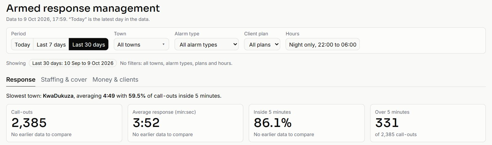
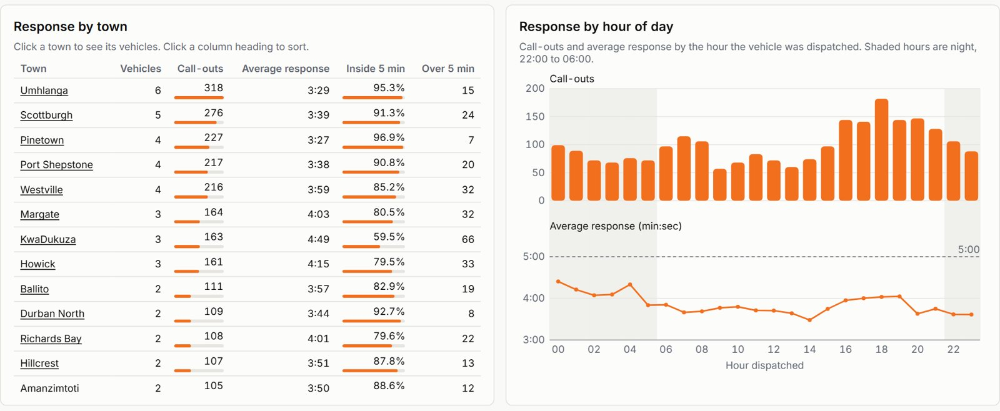
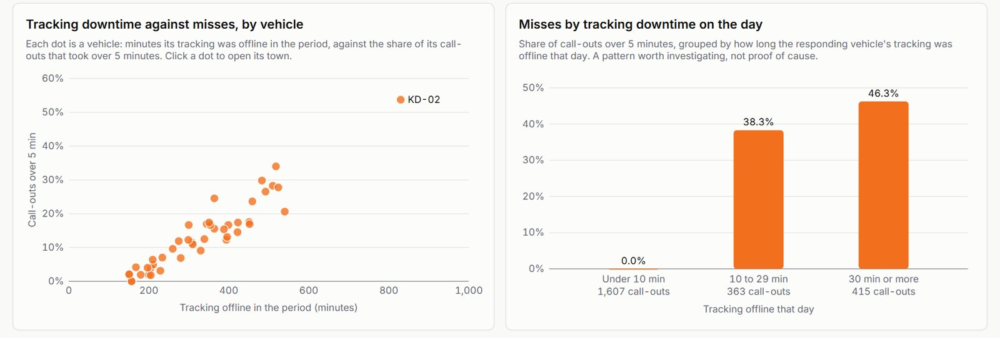
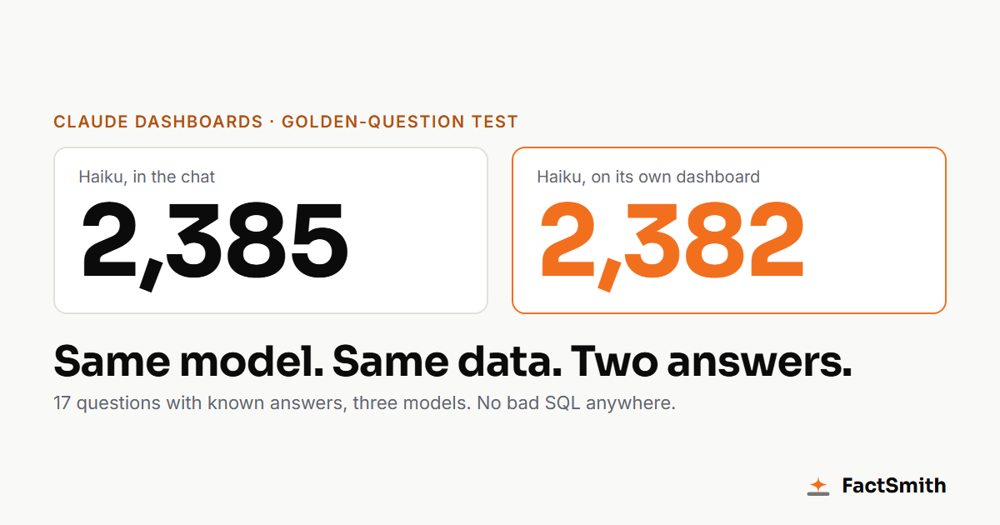
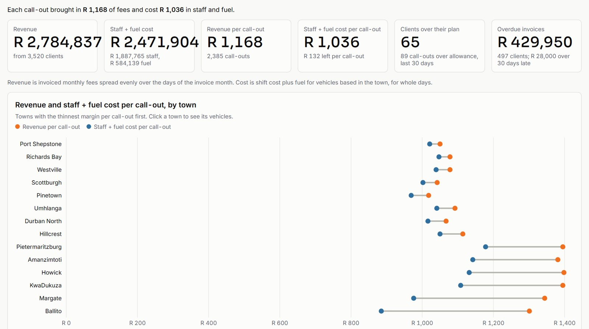

Insights
I gave Claude Dashboards a 17-question exam. The cheapest model lost three call-outs.
17 questions with answers locked in advance, three Claude models, and one lesson about definitions I didn't expect. Plus what Claude Dashboards really is under the hood, what it's like to use day to day, and where your data goes when Claude reads it.
On 8 October Anthropic launched Claude Dashboards, in beta. You ask a question in plain language. Claude writes SQL against your warehouse and gives you a live dashboard.
I am a data architect. I have spent over 20 years building warehouses, and I have a simple rule for accepting one: before handover, we agree a list of golden questions with known answers. Then we check the warehouse gets them right. That rule has saved me from more awkward steering committees than I care to count.
So I did the same to Claude Dashboards. I wrote 17 questions, fixed the answers in advance, and kept the answers away from Claude. Think of it as an exam where the examiner has already marked the memo.
The idea is not new, and I won't pretend it is. Databricks builds it into Genie as benchmarks, and AI teams call it an eval set. What I wanted was the business version: answers fixed before the model sees the question, plain English an owner would use, and traps from real reporting.
The short version: it did very well. The more useful result is where it did not, and why.
The setup
I built an invented business: an armed-response company in KwaZulu-Natal. The data is invented sample data, generated for this test. The town names are real places. The figures are not. No real burglars were harmed.
The data sits in a star schema in BigQuery. It has six dimensions (town, vehicle, alarm type, client, date and time of day) and four business processes: call-outs, billing, shifts and vehicle tracking.
I put the same business in two places, and you can open both. One is a Claude-generated HTML demo, which I'll call the artifact: Response Live. The other is Claude Dashboards, running live SQL on BigQuery. A copy of that one runs in your browser as Armed Response Management, with every slicer, tab and drill-down working.

How I set it up
Nothing exotic. Anyone on a paid Claude plan can repeat this in an afternoon.
- Warehouse: a Google BigQuery sandbox. It is free, needs no billing account, and deletes tables after 60 days, which is either a feature or a trap depending on how organised you are.
- Data: a small script generated the invented company and loaded the star schema. The call-outs come from the same generator as the Response Live demo, with the clock frozen, so the two show the same numbers.
- Connection: the official Google Cloud BigQuery connector in Claude, made by Google. You sign in with your Google account once, and Claude can then list tables and run read-only queries as you.
- Claude: a Pro account. For each model a brand-new chat with memory off, research off and no project, so nothing from an earlier run could leak in.
- Prompts: three, pasted word for word into every run. No definitions, no corrections. If a model asked a question, the rule was to reply "Your call, state the assumption." None of them asked.
The first prompt, trimmed, read like this:
"I run an armed-response security company. Our data is in BigQuery, project […], dataset […]. Build me a control-room dashboard for the last 30 days: how many call-outs we had, our average response time, how often we got there inside 5 minutes, which town is slowest, response by town, and an hour-by-town view of when we miss 5 minutes. I want to be able to look at night only (22:00 to 06:00) too."
The second asked the four questions from the demo. The third asked eight questions across billing, shifts and tracking, and ended with "Add whatever of this belongs on the dashboard."
What is under the hood
Strip away the launch video and Claude Dashboards is three things you may already know, put together well.
- An artifact. Anthropic's own help page says it plainly: "A dashboard is an artifact made from the Dashboards template." It is the same family as Claude's Docs, Slides and Design: a web page Claude writes and keeps in your Artifacts tab.
- A connector. Claude reaches your data through a connector: Redshift, BigQuery, ClickHouse, Databricks or Snowflake, or apps such as Salesforce. Claude's connectors are built on the Model Context Protocol, the open standard Anthropic published in 2024 for plugging tools into models.
- An agent writing SQL. Claude explores your tables first, runs test queries, then writes one SQL query per chart and bakes it into the page. When anyone opens the dashboard, each chart runs its query live and shows when it was last refreshed. Click a chart and you see its SQL.
Three consequences follow, and they matter more than the charts.
- Viewers bring their own keys. Queries run with the viewer's access, not the author's. That is good security and the reason you can't put a live dashboard on a public link. It is also why the copy on our site runs on a small dataset in your browser.
- There is no semantic layer. Every chart carries its own SQL. Nothing makes two dashboards agree on what "revenue" means. Claude was honest about this. On one headline card it wrote: "The SQL is this dashboard's own, not a governed metric." Hold that thought for the Haiku section.
- You pay twice, lightly. Building uses your Claude plan's allowance. Every refresh runs real queries, so the warehouse bills its compute separately. On a sandbox that is zero. On a busy Snowflake account, keep an eye on it.
Think of it as a very fast analyst who writes a fresh query for every chart and leaves the SQL on your desk to check. Brilliant, as long as somebody checks.
The test
The 17 checks came in three groups:
- 5 headline numbers: call-outs, average response, share inside 5 minutes, slowest town, and the night-only view.
- 4 control-room questions, such as the worst hour and the slowest vehicle.
- 8 cross-process questions, built with deliberate traps.
The traps were the sort that catch people in real reporting. Summing every invoice triples revenue, because three months of invoices sit in the table. Sales love that number. Auditors less so. Joining facts row to row fans the totals out. A night shift runs 18:00 to 06:00, but night call-outs run 22:00 to 05:59, and the two are easy to confuse.
I ran three models: Opus 5.5, Sonnet 5.5 and Haiku 5.5. I gave no definitions and no hints. The prompts were plain business English, the way an owner would ask on a Monday morning before coffee.
Results
| Opus 5.5 | Sonnet 5.5 | Haiku 5.5 | |
|---|---|---|---|
| Score (of 17) | 17 | 17 | 11 right, 4 defensible, 2 wrong |
| Minutes: dashboard / four questions / cross-business | 10.5 / about 3 / about 13 | 6.5 / 1.5 / 11 | 5 / 2.5 / up to 10 |
Opus and Sonnet got all 17, including the traps. Both used one invoice run, not three, so revenue per call-out came out at R 1,179. Both aggregated each process to town, client or vehicle before joining. Neither mixed up night shifts and night call-outs.

What impressed me was not the arithmetic. It was the judgement.
- Both models flagged that tracking going offline looked linked to every miss, and said the link was too clean to take at face value. Sonnet pointed out that 0.4% of call-outs missed when the tracker was offline 15 minutes or less, against 47% beyond that. It told me to check how the field is recorded before acting.
- Both caught a flaw in my own generator. Three vehicles with no night shifts on the roster still attended 76 night call-outs. A tired analyst misses that. So did I, and I wrote the generator. Both said the data could not explain it and suggested asking operations.
- Sonnet noticed that fuel was derived from distance, not metered. Every vehicle came out at exactly 9.1 km per litre. Either I run the most disciplined fleet in Africa, or the number was made up. It was made up, by me. Sonnet said plainly that this data cannot show fuel waste or theft.
- Both said overtime and slow response move together, and that this shows association, not cause. On shifts with no overtime, 2.4% of call-outs missed 5 minutes. On the longest overtime, 55.7% did.

I should also mention a first attempt. In my first Opus run I left out the Google Cloud project ID. Claude asked for it, tried a few guesses that all failed, searched my other connected sources, and then refused to build a dashboard on made-up numbers. I would rather have that than a confident page of invented figures. I have sat through board packs that showed less restraint.
Haiku: mostly right, but read this part
Haiku was quick and mostly right. It also taught me the best lesson in the test.
Its dashboard said 2,382 call-outs. Its own chat text, a few lines earlier, said 2,385. The golden answer is 2,385. Other figures were off by a few as well: 96 call-outs at midnight against 99, and 53 panic-app activations against 55.

I checked in BigQuery. The queries were not wrong. Haiku had quietly used a rolling window: "30 days before right now", anchored at 01:07, when it ran. The data covers 30 calendar days. So the window cut off a few hours of the oldest day.
Two things follow. The definition was never stated. And the number on that dashboard shrinks every hour it stays open, because "now" keeps moving. It is the only dashboard I have seen that loses business while you watch it.
That is the sharpest point I can make about definitions. Nothing here was an SQL error. Two reasonable people can read "last 30 days" two ways, and they will get two different numbers on the same data. This is the missing semantic layer from the section above, caught in the act.
The second miss was the overtime question. Haiku said overtime affected response "modestly", comparing above-median and below-median days: 237 seconds against 228. It missed the real effect, which shows up by shift: 2.4% of call-outs missed with no overtime, 55.7% with the heaviest overtime. The day-level comparison averaged the cliff away. Its tracking answer had the same shape: right direction, but a weak split that hid the cliff.
Haiku's tone was as confident as the other two. If you did not have the answers, you could not tell. Confidence comes standard on every model. Depth is the upgrade. That is fine, as long as you know it and you check.
What it is like to use
Accuracy is one thing. Whether a busy owner would actually use it is another. So after the scored runs I asked Opus for the dashboard an owner would really want: filters, tabs and drill-down. That build is the Armed Response Management sample on our site.
Watching it build
You type, and Claude goes to work in the chat. A progress list ticks over as it lists tables, reads columns and tests queries. It ends with a line like "Created a file, used Google Cloud BigQuery, and 12 more steps". The first control-room dashboard took Opus about ten minutes. The full interactive one took 20 to 25. That is slower than a chart wizard and much faster than a ticket to the BI team.
The best part is the end. Claude lists its assumptions in plain English: "today" means the latest day in the data, revenue is monthly fees spread over the days of the month, "inside 5 minutes" means 300 seconds or less, and so on. If you only read one thing Claude writes, read that list. It is where the definitions live.
Using the dashboard
- Slicers that behave. Today, last 7 days and last 30 days. Town, alarm type, client plan and a night-only switch. Active filters show as chips you can remove one by one, with "Clear all filters" for the impatient. I ran nine slicer tests against the golden answers, and all nine passed.
- Tabs that follow the filters. Response, Staffing & cover, and Money & clients. Pick a town and the night switch, and the shift and money figures follow. Where a filter doesn't apply, a note on the card says so. That is a nicer touch than most dashboards I have been paid to fix.
- Drill-down. Click a town and you get its vehicles. Click a column heading and it sorts. KW-02, the slowest vehicle in the golden answers, was right where it should be.
- Design on request. I gave Claude three screenshots of our own demo and asked for the same look. It matched the fonts, colours, tiles and layout closely, and every number matched too.
What was rough
- No Dashboards button on Pro. It is a normal chat with a BigQuery connector, and the dashboard arrives as an artifact in a half-width side panel. Open the artifact on its own page to see it properly.
- Permission prompts. In the scored runs Claude asked me to approve each table lookup. A dashboard across four processes means a lot of clicking. My index finger has lodged a formal complaint.
- Connector grants. One build stalled until I signed in to BigQuery again, and every dashboard stayed blank until I clicked through an "Artifact uses connectors" dialog.
- Frozen tabs. The browser tab froze while heavy dashboards rendered, in every run and once for over ten minutes. The fix: open the artifact URL in a fresh tab, where it loaded fine. Until then I drank a lot of coffee.
- Claude never looked at its own page. It said so honestly: "I have not seen the page rendered, so the layout is unchecked." One table was clipped on the right. It checks its numbers better than its layout. So do most analysts.
- Small surprises. I asked for 30 days and the interactive version opened on 7. The night-only switch looks like a button, not a toggle. And I had to put the project ID in the prompt, because without it Claude could not find the data.
- Sharing. Anyone you share with needs read access to the warehouse tables, because the queries run as them. Plan for that before you send the link to the board.
None of this is a deal-breaker for a beta. All of it matters when you roll it out to a team.
The artifact against Dashboards
| Claude-generated artifact | Claude Dashboards | |
|---|---|---|
| Data | Generated in the page, a fixed sample | Live SQL on BigQuery |
| Refresh | Never, it only simulates a live feed | Per chart, with the time shown |
| SQL | Illustrative, for four questions | Real SQL per chart, which you can inspect |
| Scope | Call-outs only | Across billing, shifts and tracking |
| Who can view | Anyone with the link | Needs access to the warehouse |
The artifact is excellent for a demo or a story. It is simulated, though, and it cannot answer a question about your real business. Dashboards is real, but it needs a warehouse underneath it.

Claude Motion
Anthropic launched Claude Motion on the same day. It turns reports and charts into short animated videos. I planned to turn these findings into a 60-second explainer. On my Pro account Motion simply is not there: there is no entry in the menus and no upgrade prompt. Launch coverage says it is for Team and Enterprise plans. The script is written. It is waiting by the phone.
Your data and Claude
I used invented data on a personal Pro account, so I had nothing to lose. Your business is different. The question is less "who owns the data" and more "where does it travel".
Your tables stay in your warehouse. But what Claude reads to build the dashboard leaves it: table and column names, the sample rows it looks at while exploring, and every query result. Those pass through Anthropic, sit in the chat, and end up in the dashboard page. Your SQL travels too. Every viewer can click a chart and read the logic behind it, which is great for trust and less great if that logic is your secret sauce.
- The plan sets the rules. On business plans (Team, Enterprise and the API) Anthropic's commercial terms say it does not train on your content, and that you own the outputs. Personal plans (Free, Pro, Max) work differently. Since late 2025 you choose in your settings whether your chats help train Claude. Even if you opt out, the consumer terms still allow training on anything you send as feedback (those thumbs buttons) and on chats flagged for safety review. Company numbers belong on a business plan. If someone insists on Pro, switch training off and keep their thumbs to themselves.
- Your warehouse permissions are the real lock. Each viewer's queries run with their own access. So give Claude, and everyone else, a read-only login that sees a set of approved views, not the raw tables. Leave out or mask names, phone numbers and ID numbers. Claude can't leak a column it was never allowed to see.
- Owning the output is not owning the idea. You own what Claude produces, to the extent the law allows. AI-generated work may not be protectable at all, and a competitor can ask for the same chart. Your real asset is the model and the agreed definitions underneath, not the chart.
- Mind the borders. In South Africa, POPIA says personal information sent offshore, and Anthropic is in the US, needs a lawful basis. Usually that is a contract or the customer's consent. If you build dashboards for clients, put a data-handling clause in the engagement letter. Regulated businesses should also check the fine print: Anthropic's help pages say its newest artifact features aren't yet available to organisations on zero data retention, customer-managed encryption keys or HIPAA setups.
- Every hop adds a contract. The BigQuery connector is made by Google. Exporting to Hex, Sigma or Grafana adds those companies' terms as well. Know which ones you have signed up to.
None of this is a reason to stay away. It is a reason to set it up properly once: business plan, governed read-only views, personal data masked, definitions written down, and someone looking at the warehouse query log now and then. (That set-up is part of our Claude Dashboards quick-start.) Usual disclaimer: I am a data architect, not your lawyer. This reflects Anthropic's commercial terms and consumer terms as of October 2026. Check the current versions before you rely on any of this.
What this means for a business
I went into this test looking for where Claude breaks. On a well-modelled warehouse with clear names, the stronger models did not break at all. I had the same result on an earlier test: 20 out of 20 golden questions on raw sample tables, in about nine minutes.
So the gap is not Claude. It is three things around it.
- Getting the data into a warehouse. Most small and mid-sized businesses have none. Their numbers live in an accounting package, an ERP and a handful of spreadsheets.
- Agreeing definitions. "Last 30 days", "revenue", "active customer", "on time". If two people ask the same question and get different answers, the dashboard is no use to either.
- Proof. A dashboard is only useful once you know it's right. Write down 20 questions with answers fixed from your books, run them, and keep the scorecard. Run them again every month.
That is what I would want before I trusted any dashboard with a decision, whether a person or a model built it.
If you want Claude Dashboards on your own business data, proven right, that is what FactSmith does. See the Claude Dashboards quick-start, browse all our sample dashboards (including Fleet Live for tanker fleets), or talk to us about your data.